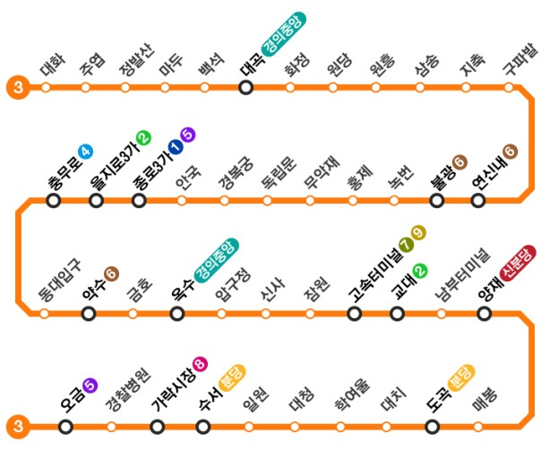

경기도 고양시 일산서구 대화역에서 서울특별시 송파구 오금역을 잇는 수도권 전철 운행계통. 서울 지하철 3호선과 일산선이 직결한 형태다. 노선색은 주황색이다. 수도권 전철 경의·중앙선과 함께 고양시와 서울특별시를 이어주는 몇 안 되는 지하철 노선이다.
원래는 서로 다른 노선으로 취급되어 색도 따로 쓰고 노선도에도 따로 표기가 되어 있었으나, 2000년에 수도권 전철 3호선이라는 이름으로 통합하게 되었다. 그러나 철도사업법과 도시철도법 규정에 따라 공식적으로 여전히 별개 노선으로 간주된다. 국토교통부 철도거리표에 일산선 구간 수치만 따로 나오는 것이 그 증거이다.
환승역은 대곡역(경의·중앙선), 연신내역(6호선), 불광역(6호선), 종로3가역(1호선, 5호선), 을지로3가역(2호선), 충무로역(4호선), 약수역(6호선), 옥수역(경의·중앙선), 고속터미널역(7호선,9호선), 교대역(2호선), 양재역(신분당선), 도곡역(수인·분당선), 수서역(수인·분당선), 가락시장역(8호선), 오금역(5호선 마천지선)이다.
현재 운행중인 열차에는 서울교통공사 3000호대 VVVF 전동차, 한국철도공사 3000호대 전동차, 서울교통공사 3000호대 초퍼제어 전동차가 있다. 1호선과 반대로 서울교통공사 전동차가 압도적으로 많아서 한국철도공사 전동차를 보긴 힘들다. 서울교통공사는 49편성, 한국철도공사는 16편성이 있다.
강북 구간에는 고개와 좁은 길이 많아 NATM터널 공법을 쓴 구간이 유난히 많은 탓에 섬식 승강장이 대부분인데 반해, 강남 구간은 상대식이 대부분이다.